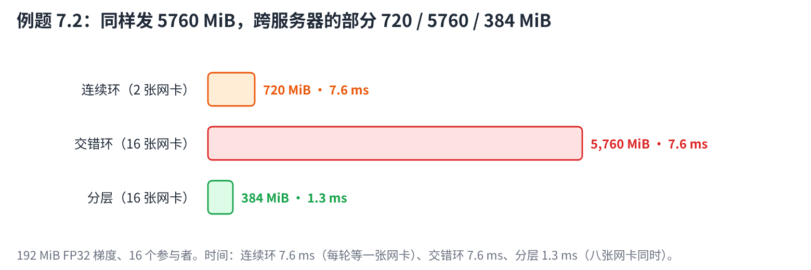
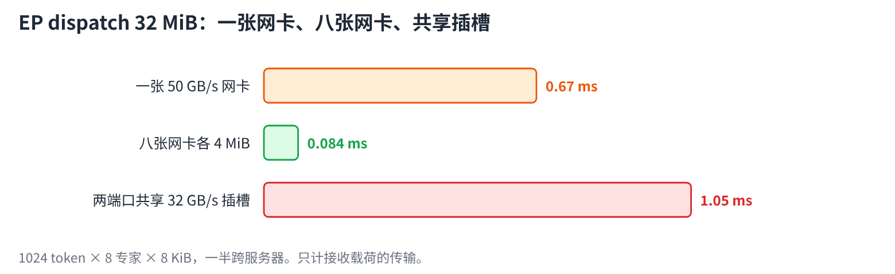
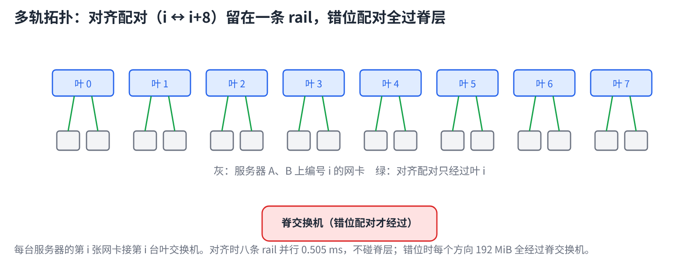
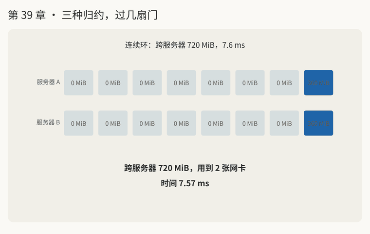

第 39 章 · 跨节点流量与物理路径：同样的字节，走哪几张网卡
本地运行
git clone https://github.com/wikieden/ai-infra-from-constraints
cd ai-infra-from-constraints/code/notebooks
pip install jupyterlab torch numpy
jupyter lab ch39_cross_node.ipynb也可以下载后直接用 VS Code 打开 .ipynb 运行。需要 GPU 的章节在 Colab 里选「代码执行程序 → 更改运行时类型 → GPU」。
本章回答：同样发 5760 MiB，连续环、交错环、分层归约为什么一个 7.6 ms、一个 1.3 ms？分层归约什么时候反而更慢？在网归约什么时候值得？TP、PP、EP 跨服务器各怕什么？多一张网卡什么时候真有用？
讲解日期：2026-11-24 · 上一章：第 38 章 从超节点走向集群 · 下一章：第 40 章 远程访问的路径与并发
对应原文：materials/ai-infra-book/manuscripts/07-数据中心网络.md§7.2 L116–L314（例题 7.2，图 7-4 到 7-14）
本章缩写：SHARP = Scalable Hierarchical Aggregation and Reduction Protocol（可扩展 / 分层 / 聚合 / 归约协议，交换机内归约）· rail-optimized = 多轨拓扑 · FuseLink = 借用相邻网卡的多网卡通信系统。全部缩写见 缩写与术语表
讲解
第一步：三种归约，字节总量一样，过网卡的不一样（2026-11-24）
类比：两栋楼之间运材料。 一种做法让所有人排成一圈，只有两个人站在楼门口，所有材料都从这两扇门过（连续环）；一种做法让每个人都隔楼交替站，每扇门都忙，但运的量翻了八倍（交错环）；第三种先在楼内把材料合并好，再让八扇门各运一份（分层）。
例题 7.2（原文 L120–L176）：Qwen3-8B 一层 gate 投影的 FP32 梯度 \(M = 12288 \times 4096 \times 4 = 192\) MiB；16 个参与者的环形 AllReduce 每人发 \(2(p-1)M/p = 360\) MiB，共 5760 MiB、30 轮。预算 3 ms。
| 方案 | 跨服务器字节 | 用到的网卡 | 时间 |
|---|---|---|---|
| 连续环 0, 1, …, 15 | 720 MiB（只有 7→8、15→0 跨） | 2 张 | 7.6 ms |
| 交错环 0, 8, 1, 9, … | 5760 MiB（每条边都跨） | 16 张 | 7.6 ms |
| 分层：机内 RS → 8 对跨机 AllReduce → 机内 AG | 384 MiB | 16 张 | 1.3 ms |
一轮之内由最慢的那条边决定，各轮相加。连续环每轮都等那条过网卡的 12 MiB（0.25 ms），其他 14 条 NVLink 边 0.03 ms 就传完、在等；分层把跨服务器压成 2 轮，每轮 8 张网卡各传 12 MiB：
跨服务器字节少 47%，时间少 83%：关键在路径，割集的有效带宽从 50 GB/s 变成 400 GB/s。

图 39-1 · 逻辑发送总量都是 5760 MiB。
分层什么时候不划算（原文 L178–L182）：本地带宽 \(B_L\) 不低于网卡（约 50 GB/s）就划算。对照配置：每台 4 张 A100 PCIe，卡间 PCIe 32 GB/s，双端口网卡共用一个 32 GB/s 插槽：连续环 11.0 ms，分层 9.4 + 6.3 = 15.7 ms，反而慢；本地带宽要到约 64 GB/s 才持平（NVLink 桥接每条边都 300 GB/s 时降到 7.3 ms）。差别在共享接口：跨服务器阶段的流量全挤过同一个插槽。
在网归约（原文 L184–L200）：交换机在转发时做加法（NVIDIA SHARP），跨服务器阶段每张网卡只发一次、收一次：
| 持有同一分片的服务器 | 环 | 在网归约 |
|---|---|---|
| 2 | 0.505 ms | 0.504 ms（只省一次启动） |
| 8 | 0.892 ms | 0.504 ms |
| 32 | 1.027 ms | 0.504 ms（约 49%） |
一句话：传输时间取决于字节经过哪些资源；分层归约让每张网卡都有自己的分片，在服务器多时再加在网归约。
第二步：TP / PP 跨服务器怕什么（2026-11-24）
类比：两个车间之间送零件。 送一箱大零件（prefill）看卡车多快；送一个小螺丝（decode）时间全花在开门、登记、签收上。
原文 L210–L235：\(T_{\mathrm{msg}} = \alpha + M/B\)，\(\alpha = 5\) μs、\(B = 50\) GB/s：
| 数据 | 时间 | 主导 |
|---|---|---|
| prefill 8192 token 的隐藏张量 64 MiB | 1.35 ms | 传输 |
| decode 一个 token 8 KiB | 5.16 μs | 启动（约 97%） |
转折 \(M = \alpha B \approx 244\) KiB（第 22 章的 \(\alpha R\)）。PP：4 阶段 8 个 micro-batch 11 ms、利用率 73%；要 90% 至少 27 个独立 micro-batch。低并发 decode 下一个 token 依赖上一个，加服务器造不出独立 micro-batch，只有加并发请求才行。
一句话：prefill 先减跨服务器字节，低并发 decode 先减每层同步次数；PP 的利用率看有多少独立请求。
第三步：EP 跨服务器：接收端和共享接口（2026-11-24）
类比：快递分拣中心的进货口。 全国包裹都卸在一个口要排很久；分到八个口就快八倍；但如果八个口后面共用一条传送带，最后还是卡在传送带上。
原文 L239–L265：1024 个 token 各选 8 个专家，8 KiB 一份，一半跨服务器：dispatch \(nkfd = 32\) MiB，combine 再 32 MiB。
| 接收方式 | 接收时间 |
|---|---|
| 全进一张 50 GB/s 网卡 | 0.67 ms |
| 均分给八张网卡（各 4 MiB） | 0.084 ms |
| 对照配置：两端口共用 32 GB/s 插槽 | 1.05 ms |

图 39-2 · 分散目标减轻每张网卡；沿路径往前追，共同入口还是同一个。
流量矩阵 \(V_{ij}\)：行和是发送量，列和是接收量，跨割集的元素和是割集流量，各除以带宽取最大。dispatch 的热点接收方就是 combine 的热点发送方。两条减流量的路：热门专家放发送方本地（降 \(f\)）、换数据格式（降 \(d\)）。
一句话：EP 的流量 \(2nkfd\)；接收要分散到多个独立入口，还要往前追有没有共享接口。
第四步：多网卡与多轨拓扑（2026-11-24）
类比：多开几条车道。 车道本身要真的通到外面（不共享一个收费站），而且要有车分到每条车道上。
有网卡不等于用上（原文 L269–L291）：连续环只让八张网卡中的一张有活；对照配置的双端口共用插槽，单端口 14.1 ms，双端口只降到 11.0 ms（插槽 32 GB/s），不是 7.1 ms。借用相邻网卡（FuseLink）：直连 50 + 经 NVLink 中继 \(\min(450, 100)\)，
1.125 GiB：下游 50 / 100 / 150 GB/s 时 24.2 / 12.1 / 8.1 ms。消息小于约 930 B 时，网卡每秒能发起的请求数（\(1/\delta\)）先成瓶颈；MoE 一个 token 的 7–14 KiB 远大于它，所以先用尽的仍是带宽。
多轨拓扑（原文 L297–L309）：每台服务器的第 \(i\) 张网卡都接第 \(i\) 台叶交换机（第 \(i\) 条 rail）。分层归约让 rank \(i\) 配 rank \(i + 8\)，同一条 rail 内一跳到达，一个字节都不过脊交换机，八条 rail 并行把 192 MiB（单网卡 4.03 ms）压到 0.505 ms。配对错位（\(i\) 配 \(i + 9\)）每个方向 192 MiB 全过脊层，要和别的作业共享、经过哈希（第 42 章）。规则：两端 rank 在各自服务器内的编号相同（\(i \bmod 8\) 相等）就在一条 rail 内。

图 39-3 · 八条 rail 是八条竖直车道。
一句话：多网卡要有独立带宽、有数据分到它；rail 对齐让跨服务器字节不碰脊层。
动画演示：三种归约，过几扇门

可交互版：animations/39-cross-node.html（切换：连续环 / 交错环 / 分层；本地带宽 450 / 32 GB/s）。
怎么看：
- 两排各 8 个格子是两台服务器的网卡，亮度是每张网卡要传的字节（第一步）；
- 中间一根条是跨服务器总字节；
- 右边是按 \(\sum_r(\alpha + \max_e V/B)\) 算的时间；
- 播放：连续环 → 交错环 → 分层（NVLink）→ 分层（本地只有 32 GB/s，变慢）。
练习与作答记录
题 1（第一步）：梯度改成 BF16（每人 96 MiB），两台 HGX H100。连续环和分层归约各要多久？
作答记录：（待作答）
题 2（第二步）：α = 3 μs、B = 100 GB/s，转折数据量是多少？8 KiB 和 32 MiB 各多久？
作答记录：（待作答）
题 3（第三步）：2048 个 token 各选 4 个专家，每份 14 KiB，30% 跨服务器。dispatch 加 combine 共跨多少 MiB？均分到 8 张网卡接收要多久？
作答记录：（待作答）
原书实验 7-4 到 7-6（L202、L293、L311）。想多练可以做。
口诀
排一圈只走两扇门，交错走全门却运八倍，先楼内合并再八门各运一份；
大箱看卡车，小螺丝全在开门签收；
分拣中心多开口，后面共一条传送带还是卡；
车道要通到外面，还要有车分过去；同号车道不上主干道。
本章复习卡片
I140（例题 7.2：720 / 5760 / 384 MiB 与 7.6 / 7.6 / 1.3 ms，分层何时不划算）、I141（在网归约与 TP / PP 的 244 KiB 转折、PP 利用率）、I142（EP 的 \(2nkfd\) 与共享接口、多网卡中继、rail 对齐）。练习做完后，按答错、卡住的地方再补。
附录 · 延伸阅读
留给以后深入学习用，不影响本章主线。★ 是建议先读的。
推荐阅读
| 读什么 | 读哪里 | 读它为了什么 |
|---|---|---|
| ★ AII 第 7 章 | §7.2 L116–L314 | 本章原文 |
| Graham 等，SHARP（2016） | 实测一节 | 在网归约：128 台主机 8 B 6.01 → 2.83 μs |
| NCCL 的分层算法（NVLS、Tree） | 文档 | 实际库的分层实现 |
| FuseLink 论文 | 设计一节 | 借用相邻网卡 |
| DGX SuperPOD 参考架构 | rail-optimized | 多轨拓扑 |
数学原理
- 一轮取最大、各轮相加：\(\sum_r(\alpha + \max_e V_{r,e}/B_e)\)。
- 分层持平条件：本地发送量 / \(B_L\) + 跨服务器时间 = 连续环时间。
- 流量矩阵：行和、列和、割集和三个约束各取最大。
公式清单
| 公式 | 意思 |
|---|---|
| \(T_{\mathrm{comm}} = \sum_r(\alpha + \max_e V_{r,e}/B_e)\) | 逐轮资源模型 |
| \(T_{\mathrm{msg}} = \alpha + M/B\)，转折 \(\alpha B\) | 交接时间 |
| \(V_{\mathrm{EP}} = 2nkfd\) | dispatch + combine |
| \(B_{\mathrm{eff}} = \min(B_D, 50 + \min(450, 100))\) | 借用网卡 |
代码对照：把本章的数字用代码算一遍
代码
ai-infra/solutions/chapter-code/ch39_cross_node.py，测试tests/test_ch39.py：
bash cd ai-infra/solutions/chapter-code uv run python ch39_cross_node.py uv run pytest tests/test_ch39.py
| 讲义 | 写法 | 跑出来 |
|---|---|---|
| 第一步 | ring_continuous_ms()、hierarchical_ms()、in_network_ms(S) |
7.6 / 1.3 ms；0.505 / 0.504 |
| 第二步 | msg_us(M) |
1.35 ms、5.16 μs |
| 第四步 | relay_gbps(BD) |
50 / 100 / 150 GB/s |
代码里才看得到的 3 件事：
hierarchical_ms的本地部分：8 个参与者 RS + AG 共 14 轮，每轮每人发 \(M/8 = 24\) MiB。- 对照配置的分层：4 卡 RS 3 轮 + AG 3 轮，每轮 48 MiB；跨服务器 2 轮，每轮 96 MiB 都挤过一个插槽。
- 在网归约只计网卡发送与一次启动，交换机归约引擎的吞吐另作输入。
自己改一改（不影响练习答案）：
- 给
hierarchical_ms加服务器数参数，画 2、4、8 台的时间。 - 写一个流量矩阵函数：输入 \(V_{ij}\) 和每卡网卡带宽，输出最慢的发送方、接收方和割集。
- 把
relay_gbps改成 NVLink 同时承担本机归约、只剩 60 GB/s 给中继的情况。